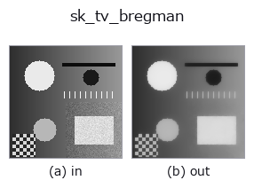

smoothing op• Data kinds: image → image
• Call: fullseye.apply(img, "sk_tv_bregman", a=0.5, b=0.5) (2-D model = एक image + दो scalar knobs a,b∈[0,1])

*Figure synthetic 128×128 input पर सच में चलाकर मिला output है। बाईं ओर input, दाईं ओर output। Point clouds ऊपर से देखे गए scatter के रूप में (brightness = z), 1-D series line के रूप में, volumes z दिशा में maximum-intensity projection के रूप में, videos बीच के frame के रूप में, complex images amplitude के रूप में, और जो return values चित्र नहीं बन सकते वे स्वयं values के रूप में दिखाए जाते हैं।*
Knob a को बदलकर (0.1 / 0.5 / 0.9, दूसरा knob default पर):
▸ sk_tv_bregman: knob a को बदलने का figure (docs site)
*Knob b output नहीं बदलता (मापा गया: 0.1 / 0.5 / 0.9 पर एक जैसा)।*
दूसरी images पर भी (synthetic scene / photo / coins। ऊपर की row में inputs, नीचे की row में उनके outputs। Knobs default पर):
▸ sk_tv_bregman: दूसरी images पर output (docs site)
*चौथा column colour (H,W,3) input है। यह op channels को पार किए बिना colour संभालता है (colour channel को तीसरे spatial axis की तरह convolve नहीं करता)।*
Total variation denoising (TV denoising, Split-Bregman विधि)। sk_tv जैसा ही TV regularisation का विचार, लेकिन optimisation algorithm अलग है (Bregman splitting), और इसे तेज़ी से converge होने वाला माना जाता है।
HALCON में कोई सीधा समकक्ष नहीं है। Implementation restoration.denoise_tv_bregman(v, weight=1.0+8.0*a) है जिसे [0,1] पर clip किया जाता है —— a weight को 1.0–9.0 पर sweep करता है, लेकिन इस function के लिए weight जितना छोटा, smoothing उतनी तेज़ (चिह्न-दिशा sk_tv के weight के उलट है —— denoise_tv_chambolle जितना बड़ा उतना तेज़, denoise_tv_bregman जितना छोटा उतना तेज़। इन्हें मिलाने का अर्थ है a को अपने इरादे की उल्टी दिशा में चलाना, इसलिए सावधान रहें)। b उपयोग नहीं होता।
• gallery2d_smoothing_rank family guide
• Sample data catalog (DL URL / license) — 2-D के लिए skimage.data (BSD/public) + synthetic, 3-D के लिए real data sources (Stanford/PDS आदि) के DL URL।
• Operators का स्रोत और संदर्भ — इस op family के मूल research/methods के स्रोत।
• Algorithm का मानक स्रोत (लेखक, वर्ष) और उपयोग ऊपर की family usage guide में दिए गए हैं।
नीचे का program सच में चलता है, यह जाँचा गया है (figure वाला ही input)। Studio की help में यह block buttons बन जाता है, जिनसे इसे वहीं load करके चलाया जा सकता है।
sk_tv_bregman 0.35 0.50
▸ यह pipeline load करें · Load करके चलाएँ
• find_ops_by_meaning — py -3.11 examples/find_ops_by_meaning.py
• gallery2d_smoothing_rank — py -3.11 examples/gallery2d_smoothing_rank.py
image को input के रूप में लेते हैं)identity · gaussian · mean_box · bilateral · unsharp · median · min_filter · max_filter
smoothing)gaussian · mean_box · bilateral · unsharp · sk_tv · sk_wavelet · sk_rolling_ball · sk_nlm
*Provenance: ops.py — 2D operator registry. यह per-op note tools/opdocs.py md से अपने-आप generate होता है (हाथ से edit न करें)।*
© 2026 Kazufumi Furuse — Fullseye operator documentation. Licensed under Apache-2.0.